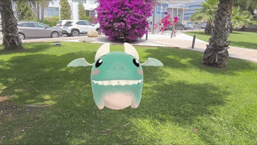
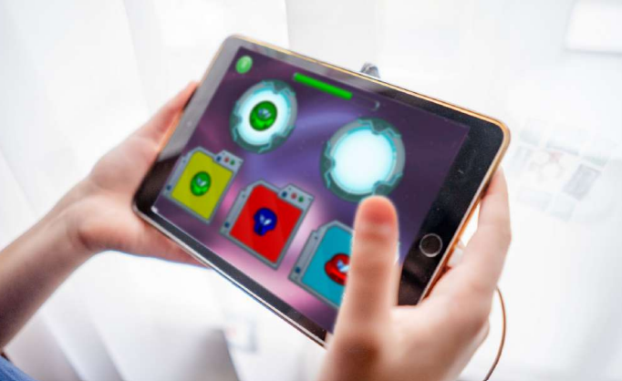
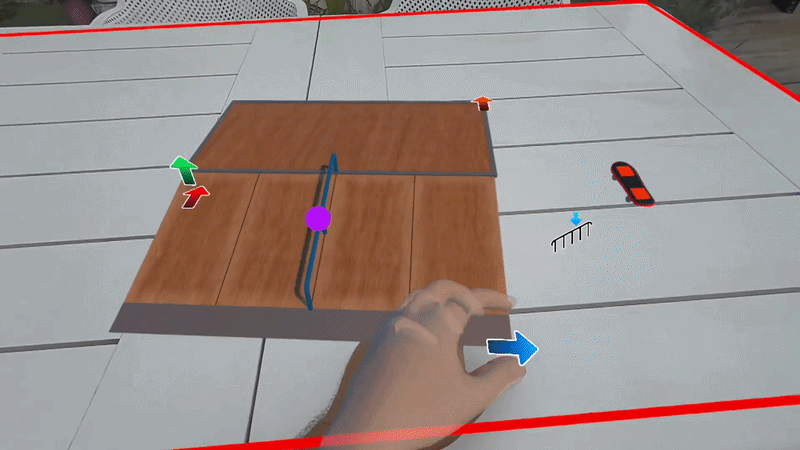
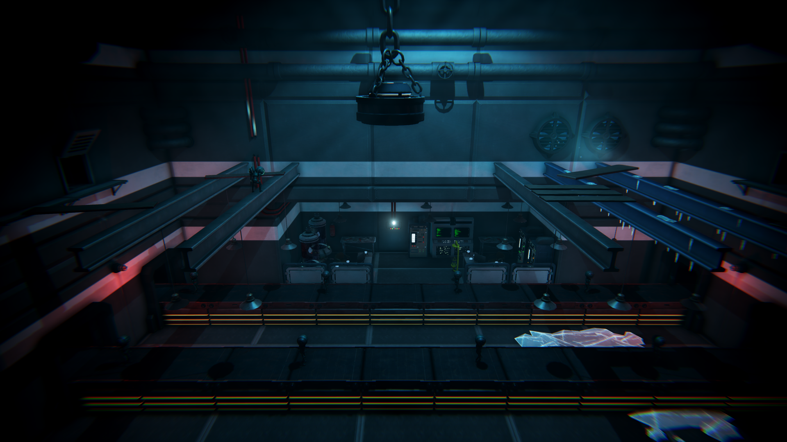
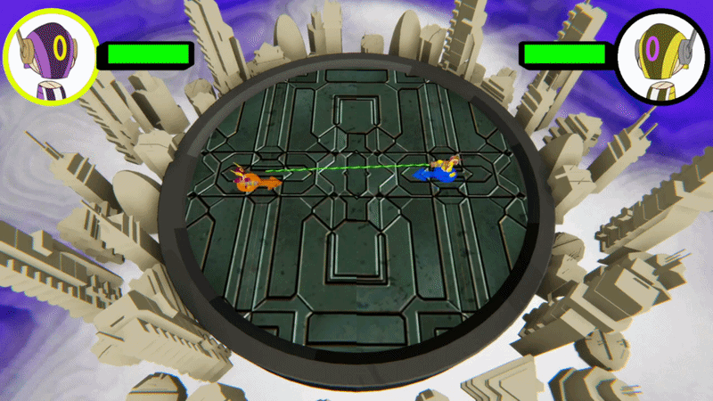
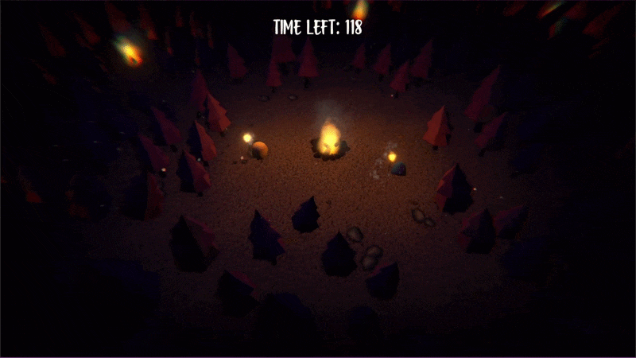
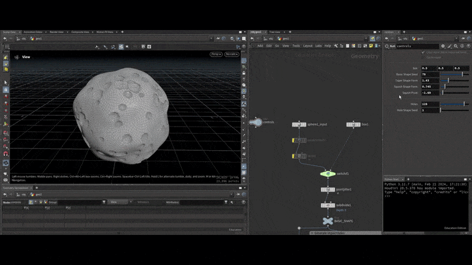
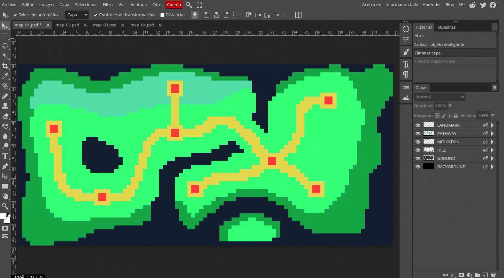
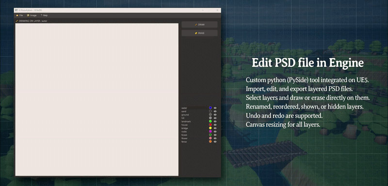
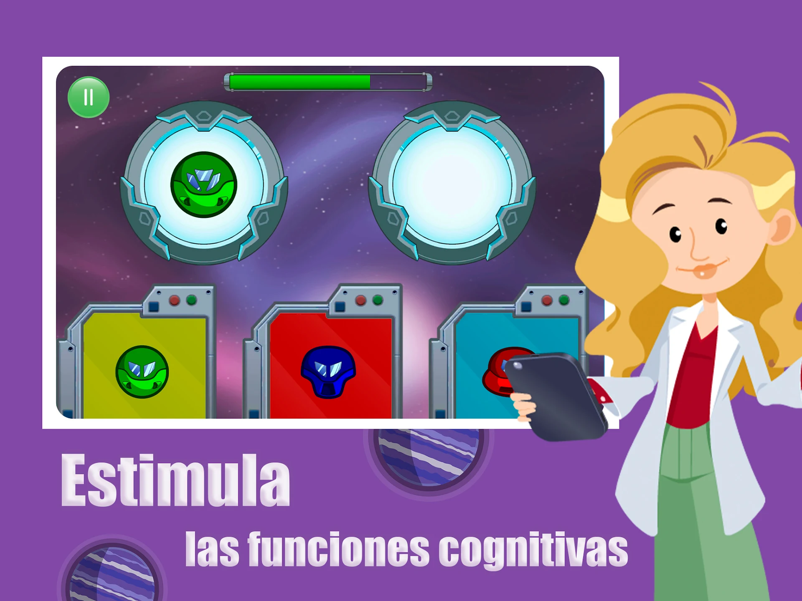

ITI Mind
A mixed reality platform using gamification and biofeedback for mental health and physical and cognitive rehabilitation.
Immersive products developed through research, prototyping and production for healthcare, industry and education.

A mixed reality platform using gamification and biofeedback for mental health and physical and cognitive rehabilitation.
A portable HMI that lets operators control different machines and keep their daily tasks connected to the factory’s existing systems.

An industrial metaverse platform for collaborative product design, process simulation and remote quality inspection.
A mixed reality experience using biosensors and biofeedback to support patients managing anxiety before surgery.

A Class IIa certified medical device using AI-powered gameplay to support children with ADHD.

Realistic physics and hand interactions designed to make a digital skateboard feel as close to a real one as possible.
Playable and technical studies combining game development, interaction design, procedural systems and real-time worlds.

Gameplay programming and development for a 2.5D atmospheric puzzle-platformer.

A fast local multiplayer game created collaboratively during a game jam.

A compact collaborative game built around timing, atmosphere and focused interaction.

An art-directed Houdini tool for building editable asteroid belts in Unreal Engine.

A Unity tool that turns layered PSD files into rule-based layouts and editable terrain.

Image processing and desktop interface experiments in Python.
Software products spanning native applications, backend systems, administration tools and connected services.

A native application centralising workplace documentation, employee services, calendars, medical areas and maps.
A connected application built across the product interface, backend and supporting web services.

Table ordering and home delivery connected to the restaurant backend and administration platform.

A travel social network combining destination discovery, matching, messaging and shared photographs.

An AI-powered serious game featuring adaptive minigames for children’s cognitive development.

A native restaurant experience supported by a Django backend and administration system.